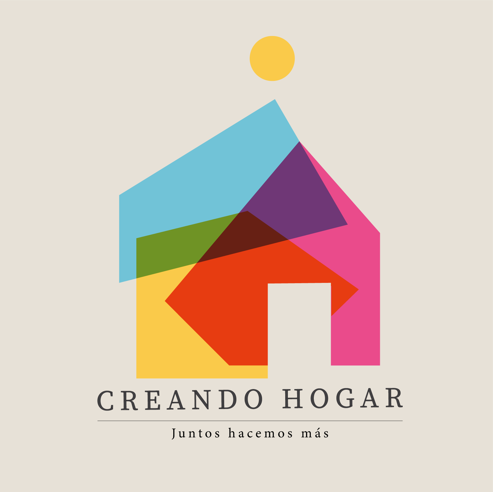
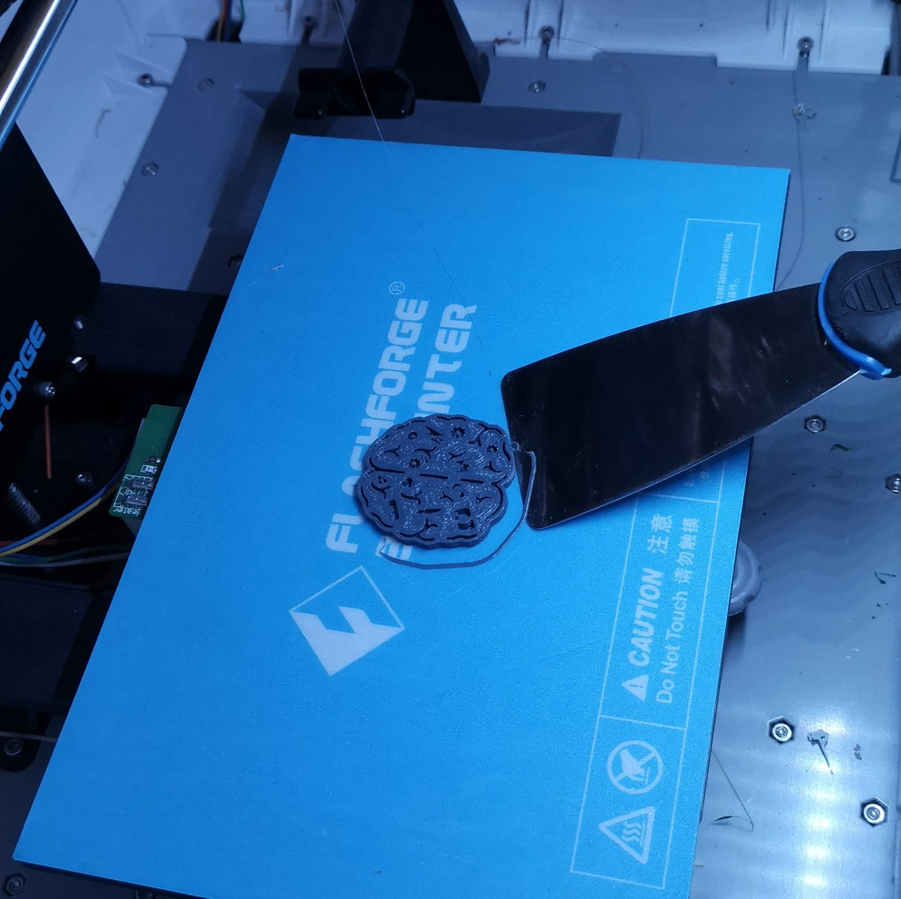

|
Soy Alicia De Barros, me dicen Ali, Alice o Vale, tengo 26 años y soy una arquitecta de interiores en formación.
Por el momento trabajo frrelance en el rubro mientras me dedico a otros proyectos personales. Me encanta el deporte,
el diseño y el olor a mantequilla derretida. Practico muay thai, me gusta también hacer trekking y cualquier deporte que involucre estar en el exterior.
Tengo también un gusto por la cocina, y una especial predilección por la repostería, mi postre estrella el new york cheesecake y los alfajores de maizena.
Si pudiera juntar todas las actividades y cosas que me gustan en un sola, sería viajando, recorriendo lugares a pie, conociendo la arquitectura, comida y cultura
del lugar; para mi eso sería unas vacaciones perfectas.
|
|  |
Llevo más de dos meses trabajando en un proyecto de arquitectura social que busca el mejoramiento de las viviendas de los
niños que habitan la localidad de Ticlio Chico, esto lo buscamos hacer por medio del implemento de materiales de bajo costo, sostenibles y que se adapten
adecuadamente al clima de la zona. Al ser la etapa de la niñez la más importante para un buen desarrollo físico y cognitivo, se escogió este usuario. Buscamos
mejorar y reforzar estos aspecto para un buen progreso a corto, mediano y largo plazo, mejorando su calidad de vida.
|
|  |
Con nuestro equipo hemos decidido realizar el dibujo de un cerebro dividido con múltiples herramientas dentro de él para simbolizar
las aptitudes que todos compartiamos, a su vez, simbolizar como nuestro lado racional y nuestro lado creativo, dan pase a ese choque entre ambos, generand así,
ideas impresionantes. Lo que se ve en la foto es la impresión 3d ya finalizada y a punto de sacar del horno.
|